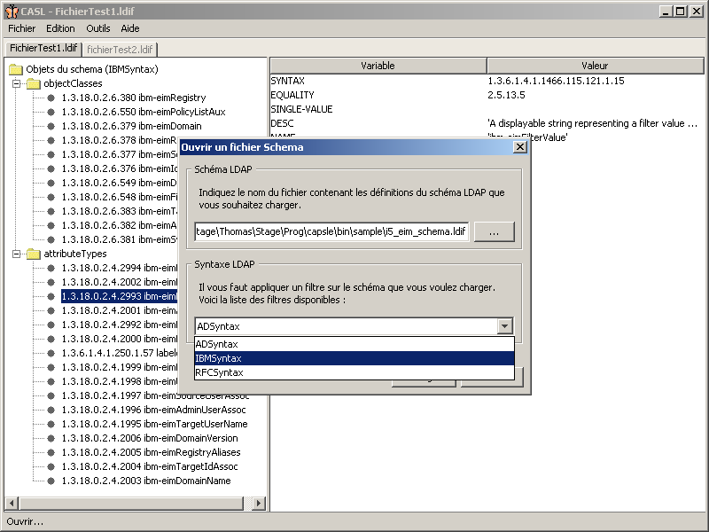
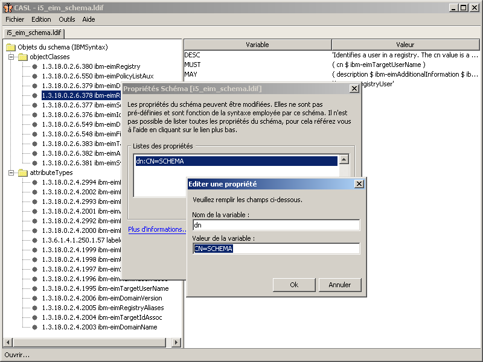
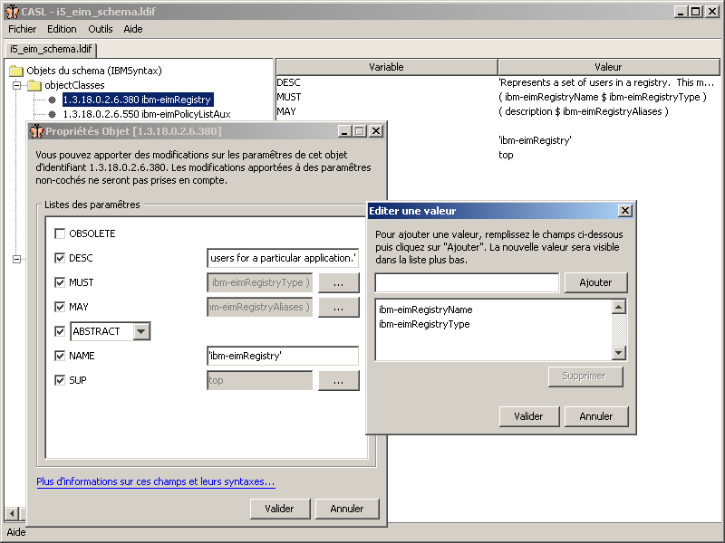
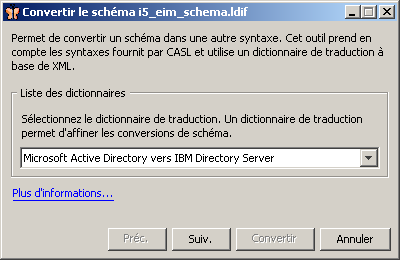
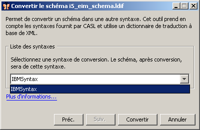
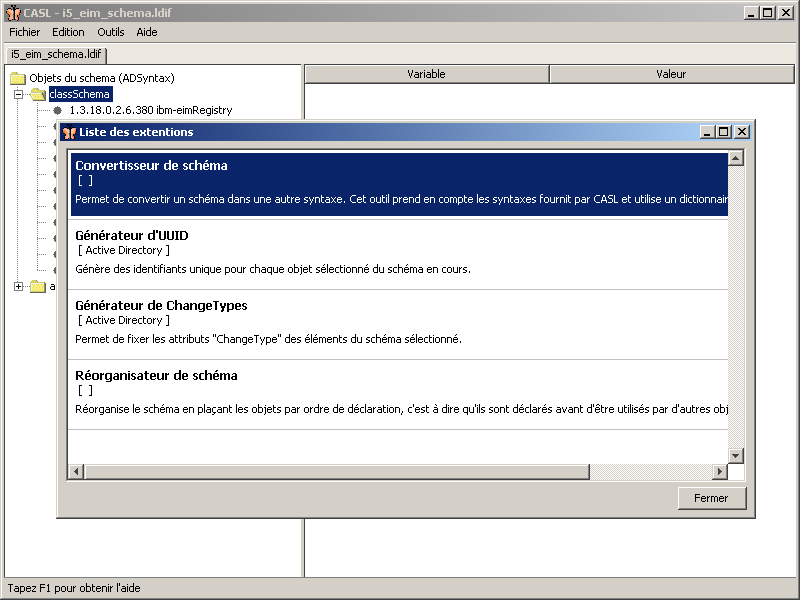

Cette documentation décrit une utilisation basique du logiciel, ainsi que les options et possibilités proposées.
Ce logiciel a été développé à la base pour répondre un besoin spécifique : migrer une partie des données d'un schéma d'un annuaire IBM Directory Server vers l'annuaire propriétaire de Microsoft, à savoir Active Directory. Pour l'utilisation basique que nous en avons fait, ce logiciel a répondu aux attentes.
Le logiciel a été dévéloppé autour d'une idée principale : la modularité. En effet, il nous a paru évident de pouvoir proposer un système permettant de mettre à jour facilement les fonctionnalités du logiciel. Ainsi, l'idée d'utiliser un système de gestion de plugins s'est imposée d'elle même. CASL dispose donc à la base de fonctionnalités relativement réduites (gestion des fichiers ouverts, renommage de fichiers, visualisation/modifications des propriétés et objets d'un schéma, aide). Par la suite, l'ensemble des fonctionnalitées supplémentaires se trouve être des modules bien spécifiques, ayant des points d'entrées réduits dans l'application principale.
Enfin, nous nous appuyons sur les recommendations fournies par la RFC 2252 (ou le document PDF en français). Vous y trouverez toutes les informations sur le standard utilisé, les mots-clés et syntaxes utilisées pour les déclarations d'objets et attributs d'un schéma LDAP.
[sommaire]
CASL dispose d'une interface graphique relativement intuitive. Une barre de menu classique est visible, elle permet d'accéder aux différentes fonctions du logiciel.
Le but du logiciel est avant tout de pouvoir manipuler des fichiers spécifiques, contenant des informations propres aux schémas des différents annuaires pris en charge, avec des syntaxes différentes. C'est pourquoi, l'ouverture/fermeture multiples de fichier est facilitée grâce à l'utilisation d'un système d'onglets. Ainsi, chaque fichier ouvert est représenté par un onglet mis en évidence, quand le fichier concerné dispose du focus.

Figure 01 - Manipulation de fichiers
Lorsqu'il s'agit d'ouvrir un fichier, il faut spécifier quelle syntaxe utilisée pour lire le fichier. Qu'est ce qu'une syntaxe ? Il faut bien comprendre que le fichier que nous tentons d'ouvrir est un fichier spécifique, écrit dans un language propre à l'annuaire LDAP qui l'utilise, ce fichier peut donc être lisible ou non. La sélection de la syntaxe va permettre au logiciel de savoir comment récupérer toutes les informations importantes de ce fichier : un fichier propre à IBM étant structuré vraiment différemment d'un fichier propre à Microsoft. Nous proposons essentiellement trois syntaxes différentes :
[sommaire]
La figure 1 nous montre qu'il est aussi possible de visualiser les données d'un schéma. Il est ainsi possible d'accéder à quelques informations. Nous pouvons les séparer essentiellement en deux catégories : les propriétés générales et les propriétés des objets.
[sommaire]
Il est possible d'accéder aux propriétés du schéma de deux façons. Soit par la barre de menu standard en haut de l'application (Edition - Propriétées), soit en faisant un clic droit sur l'onglet adéquate. Vous accéderez alors un menu vous proposant plusieurs choix, dont accéder aux propriétés du schéma.

Figure 02 - Les propriétés du schéma
Les propriétés du schéma permettent de fixer des paramêtres globaux aux objets qu'il contient. Par exemple, il est possible de fixer le DN (Distinguished Name) global. Il est vous est possible de fixer autant de paramêtres que vous le souhaitiez, pour le peu que les syntaxes du logiciel les prennent en compte.
Paramêtres de propriétés RFC et IBM
exemple: "DN: cn=Schema,cn=Configuration,dc=domaine,dc=com"
exemple: "DN: cn=Schema,cn=Configuration,dc=domaine,dc=com"
exemple: "defaultObjectCategory: cn=Attribute-Schema,cn=Schema,cn=Configuration,dc=domaine,dc=com"
Le paramêtre objectClassCategory prend au choix trois valeurs possibles, et aucune autre. Les valeurs sont "1" pour indiquer que l'objet concerné est structurel (STRUCTURAL), "2" pour abstrait (ABSTRACT) et "3" pour auxiliaire (AUXILIARY). Pour plus d'informations, veuillez vous référer à la documentation en ligne de Microsoft (voir les caractéristiques des classes d'objets).
exemple: "subClassOf: top"
Microsoft a tenu à distinguer les données qui sont stockées dans son annuaire. C'est pourquoi il existe une bonne centaine de références d'après sa documentation. Notre logiciel n'en connaît qu'une dizaine par défaut, celles indiquées explicitement dans la documentation de Microsoft (mais il est toutefois possible de lui renseigner une autre référence, mais dans ce cas la valeur oMSyntax des objets ne sera pas renseignée automatiquement):
| Nom | Identifiant | Valeur oMSyntax |
|---|---|---|
| String(octet) | 2.5.5.10 | 4 |
| Object(DN-Binary) | 2.5.5.7 | 127 |
| Boolean | 2.5.5.8 | 1 |
| Object(DS-DN) | 2.5.5.1 | 127 |
| Integer | 2.5.5.9 | 2 |
| LargeInteger | 2.5.5.16 | 65 |
| String(NT-Sec-Desc) | 2.5.5.15 | 66 |
| String(Sid) | 2.5.5.17 | 4 |
| String(Unicode) | 2.5.5.12 | 64 |
| String(Generalized-Time) | 2.5.5.11 | 24 |
[sommaire]
Ce logiciel vous donne la possibilité de manipuler les objets et attributs du schéma déjà présent. C'est à dire qu'il ne vous est pas encore possible, tout du moins dans la version présente, d'ajouter des données au schéma ouvert. Vous pouvez ainsi supprimer des objets ou attributs, et même modifier les données qu'ils contiennent à votre convenance.

Figure 03 - Modifier des valeurs d'un élément du schéma
L'arborescence sur le côté gauche de la fenêtre vous permet d'accéder aux données du schéma. Nous distinguons deux catégories : objets du schéma et attributs du schéma (appelé différement en fonction de la syntaxe du schéma). Si vous cliquez sur une entrée quelconque du schéma, vous pourrez visualiser les données qu'elle contient dans le panneau de droite. Vous pouvez accéder de deux manières différentes à la fenêtre d'édition de ces données :
[sommaire]
Par défaut, deux outils non spécifique aux syntaxes sont présent dans notre application : le réorganisateur des données d'un schéma et la conversion des données d'un schéma.
[sommaire]
Tout objet ou attribut d'un schéma sont déclarés dans un certain ordre. En effet, le serveur LDAP lit une à une les entrées du fichier pour constituer sa base d'objets et d'attributs. Cependant, un objet ou un attribut peut être dépendant d'un ou plusieurs autres objets ou attributs. C'est ici que l'ordre de déclaration des données devient important. En effet, si un objet ou un attribut dépend d'un autre objet ou d'un autre attribut, celui-ci doit être déclaré avant. Mais alors qu'est ce qu'une réorganisation de schéma ?
La réorganisation d'un schéma consiste donc à refabriquer l'ordre dans lequel les objets et attributs doivent être déclarés. Cela ne modifie en rien l'affichage à proprement parlé des données du schéma (vous ne verrez aucune différence par l'interface graphique). Cependant, au moment de l'écriture du fichier, cet ordre sera pris en compte pour écrire toutes les données.
[sommaire]
Une des autres fonctionnalités de bases de CASL est de pouvoir convertir un schéma d'une certaine syntaxe vers ce même schéma mais dans une syntaxe différente. Cela ce fait donc par le biais d'une extention qui applique la conversion sur le schéma couramment sélectionné.


Figure 04 - Convertir un schéma
Ce convertisseur s'appuie sur deux données cruciales. Tout d'abord, il dispose d'un fichier au format XML dans lequel sont définis tous les dictionnaires de conversion. Ce fichier est dans le répertoire racine de l'application et se nomme "traduc.xml". Ensuite, le convertisseur s'appuie sur CASL pour connaître la liste des syntaxes disponibles. Un algorithme permet alors de ne proposer à l'utilisateur que les dictionnaires de conversion pour le schéma sélectionné, ainsi que les syntaxes de destination.
[sommaire]
Comme nous l'avons dit, CASL a été développé de façon modulaire. De cette façon, il devient très facile d'étendre les fonctionnalités du logiciel en créant d'autres plugins. Pour démarrer un plugin, il suffit alors de ce rendre dans le menu principal en haut de l'application. Ainsi, le menu "Outils" propose la liste des plugins organisée par catégorie.

Figure 05 - Les plugins dans CASL
[sommaire]
[sommaire]
Copyright (C) 2006 Thomas Chemineau This program is free software; you can redistribute it and/or modify it under the terms of the GNU General Public License as published by the Free Software Foundation; either version 2 of the License, or (at your option) any later version. This program is distributed in the hope that it will be useful, but WITHOUT ANY WARRANTY; without even the implied warranty of MERCHANTABILITY or FITNESS FOR A PARTICULAR PURPOSE. See the GNU General Public License for more details. You should have received a copy of the GNU General Public License along with this program; if not, write to the Free Software Foundation, Inc., 51 Franklin Street, Fifth Floor, Boston, MA 02110-1301, USA.
[sommaire]